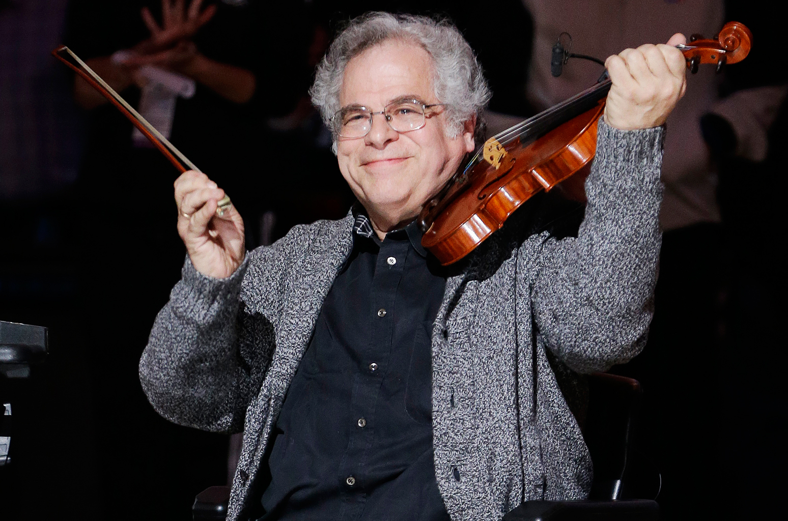
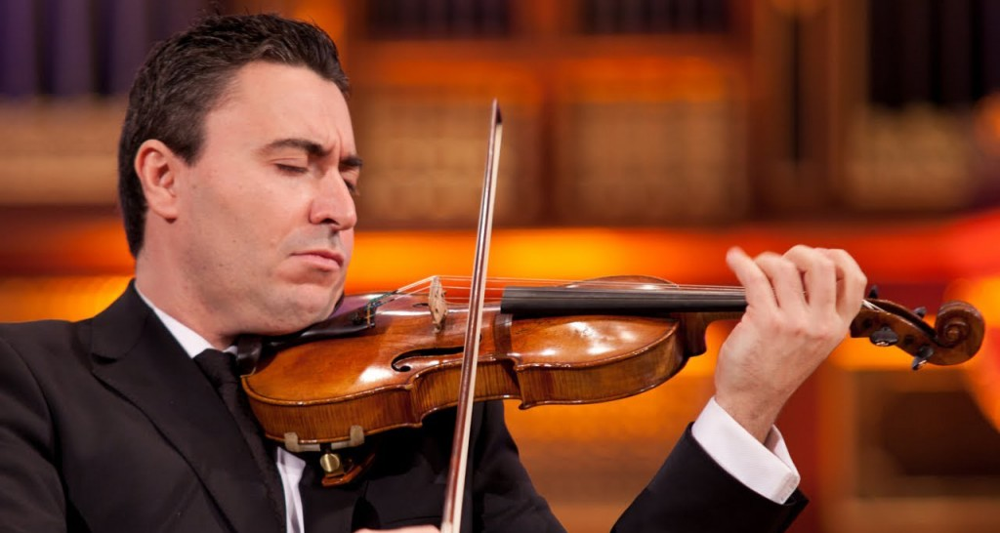
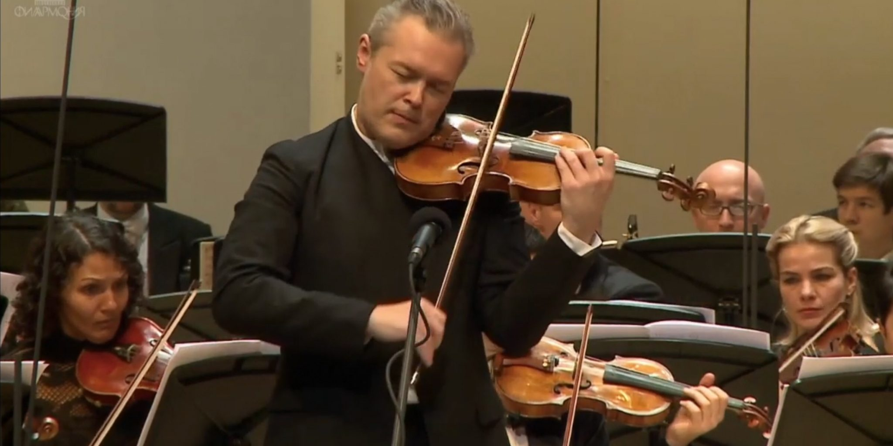

The violin is the smallest and highest pitched string instrument typically used in western music. A person who plays the violin is called a violinist. A person who makes or repairs violins is called a luthier. It takes years of practice to become a good violinist. A beginner will start with pieces and or exercises that do not require precise or complicated technique in right or left hand.
Violinists of the last century are Fritz Kreisler, Jascha Heifetz, David Oistrakh, Yehudi Menuhin, Ida Haendel, and Isaac Stern. Today some of the greatest players include Itzhak Perlman, Maxim Vengerov, Vadim Repin, Nigel Kennedy, Hilary Hahn, Joshua Bell and fiddler Sara Watkins.
Learn moreViolins vary in size mainly so that children can easily learn the violin. Violins that vary in size are known as 'fractional' violins because the different sizes of violin are recorded as fractions of a whole, full-size or 'four-quarter' violin. Fractional violins can come as small as 1/64, although this is very rare. The smallest commonly played violin is the 1/16th, which is used by children aged 3-5, depending on the length of the child's arm. Violin sizes above 1/16th include the 1/10th, 1/8th, 1/4 or 'quarter-size', the 1/2 or 'half-size' and the 3/4 or 'three-quarter' size. A common way to measure what size of violin is right for the child violinist is to turn the violin back side up, and rest the back of the violin along the left under-arm of the child. If the child can reach the top of the scroll, then this is a good indication that the child will be able to manage this size of violin without dropping it, or becoming too cramped in the arm with too little space to play.
Before the violin was invented, a number of other stringed instruments similar to the violin were used. The lira of the Byzantine Empire was held upright, but the lira de braccio (viol for the arm) was held against the chin like a violin. The three-stringed violetta, which also pre-dates the violin, was also held under the chin. The viol again was similar, and became popular at around the same time as the violin. Sometimes these instruments are occasionally referred to as types of early violins; however they are all separate instruments in their own right.
The forefather of the classical/modern violin, this violin was the first standardized instrument made in the 16th century. The Baroque violin has a shallower angle of the neck, which is also usually thicker to support the tension of the strings, although the string tension is lower than on a classical violin. As more advanced crafting techniques allowed for the range of the violin to be extended in the 18th century, many of these original Baroque instruments were altered in order to fulfil these new standards. Classical Violin (Also referred to as the Modern violin or the Acoustic violin) The classical violin was developed in the late 18th and early 19th century as new techniques became available to increase the string tension and therefore the range and sound projection of the violin. The classical violin has a more slender neck, higher string tension, and is the benchmark or standard violin upon which others are assessed. More recently, classical violins have been made from many different woods, and more comfortable fittings have been developed to aid the violinist - like the chin rest, which can stop the player from dropping the violin when changing from one position to the next and helps the player to hold the violin against the neck comfortably. Better strings and rosins have also been invented in the 20th century which has improved the sound produced by the classical violin.
The Stroh violin, sometimes called the horn-violin or violinophone, was developed by John Stroh in the late 19th century. The Stroh violin uses a horn rather than a sound box to produce sound, giving it a much different timbre to an acoustic violin. Stroh violins can make a much louder sound than the traditional acoustic violin. The Stroh violin is similar to the Romanian horn violin; however the horn on the Romanian horn violin is narrower. The horn violin has never been as popular as the traditional acoustic violin due to its relatively high cost and thinner, harsher sound.
The electric violin is a violin that produces sound electronically. There are many different styles of electric violin, and as no sound box or f-holes are needed in order to produce sound, many forego the traditional aesthetics of the classical acoustic instruments. Electric violins were sold as early as the 1930's, with musicians being known to use pick-ups on violins before this date also. The sound from electric violins can be distorted through the process of amplification, which is helpful in some genre playing.
A semi-electric violin is essentially a violin that produces sound acoustically which is also fitted with a pick-up so that the sound can be electronically amplified. This kind of sound retains more of the original acoustic feel than fully electric violins, which will not sound particularly loudly when not plugged in to an amp (much like the electric and bass guitars). Pick-Ups are relatively easy to add to classical violins, however some set-ups require the modification of the violin (for example, a hole being made in the body of the violin so a 'plug-in' can be inserted).
The term 'fiddle' has been used as a slang term to describe the playing of a bowed stringed instrument since before the violin was invented. These days, while the term 'fiddle' can be used as a general term to describe a violin, it is most commonly used as a name to describe a violin used to play country or folk music from a range of different origins. The fiddle has a flatter bridge, to allow the player to perform double or triple stops more easily than on a classically arched bridge. Essentially the fiddle and the violin are the same instrument, which are mainly differentiated by the context and the style in which it is played. 'Fiddle music' can refer to music from many different countries including Ireland, England, Scotland, Poland, Hungary, Romania, as well as parts of America and many other countries.
The 5 string can be either electric or acoustic, and as its name suggests it includes a 5th string - the C string (below the G string.) The 5-string violin combines the ranges of the violin and viola in the one instrument. The five-string violin can take some time to adapt to for four-string violin players as the angle that the bow touches a specific string changes. This type of violin adapts well to country fiddle music as it allows for the player to fill out the sound more with lower notes, and the decreased angle between strings makes it easier to perform double and triple-stops (playing two to three strings at a time).